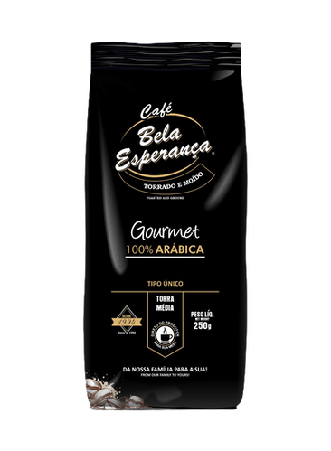
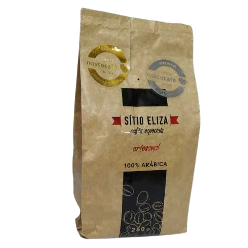
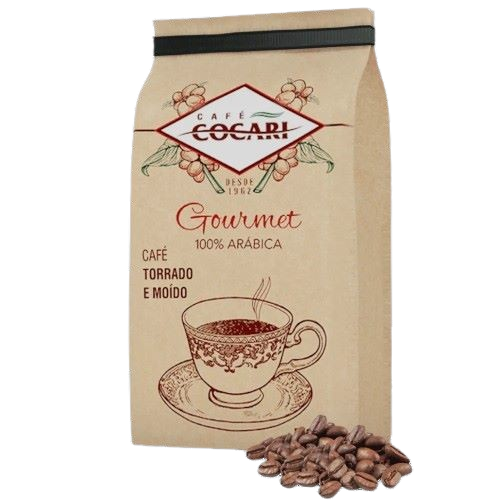

Produtos Locais☕
Do campo à Sua Xícara de Café
Conheça as histórias e sabores deliciosos de nossa região.
Café Bela Esperança
Nos anos 40, uma família cafeicultora se estabelece em Mandaguari, com o objetivo de trabalhar intensamente na produção de um café que vem conquistando a confiança das famílias. Cheia de determinação para superar os desafios da época, a família Lopes construiu uma sólida tradição cafeeira, transmitida de geração em geração.
Utilizando a variedade Arábica em sua produção, a qual é a mais cultivada e consumida globalmente, tendo as opções: Tradicional, Compadre Extra Forte com torra acentuada, Gourmet com torra média e Gourmet Expresso em torra suave.
Confira as certificações:
- 3° lugar - Categoria Café Natural, Concurso Café Qualidade Paraná 2018
- 4° lugar - Categoria Café Natural, Concurso NossoCafé Yara 2018
- 6° lugar - Categoria Café Natural, Concurso NossoCafé Yara 2018
- 2° lugar - Categoria Café Natural, Concurso Café Qualidade Paraná 2017
- 5° lugar - Categoria Café Natural, Concurso Café Qualidade Paraná 2012
- 10° lugar - Categoria Café Natural, Concurso Café Qualidade Paraná 2008
Café Sítio Eliza

"Tentamos produzir o café com bastante qualidade, começou a agregar valor, comecei a entrar nos concursos e começou a dar resultado, o nosso café foi bem mais valorizado, teve uma procura maior do nosso produto. A gente produzia um café, não era tanto qualidade, buscava mais quantidade."
"Com isso a gente foi ver, mas todo mundo produz um café igual, a gente tem que ter algo a mais, tem que ter um bom produto, daqui pra frente a qualidade, um produto de qualidade vai ter um mercado fantástico." Citou Wagner Rosseto após vencer o Concurso NossoCafé Yara 2017.
100% Arábica, com um sabor doce frutado e um aroma amendoado, doce e caramelizado, o café produzido pela família Rosseto é sinônimo de qualidade principalmente nos tempos atuais, com a cafeicultura passada por gerações na família.
Este café artesanal conta com outras duas variedades, Icatu Vermelho e IPR 106.
Confira as certificações:
- 1° lugar - Categoria Café Natural, Concurso NossoCafé Yara 2017
- 2° lugar - Categoria Café Natural, Concurso NossoCafé Yara 2018
Café Cocari
Desde 2009, a cooperativa tem se dedicado à comercialização de suas próprias linhas de café, que reverenciam suas raízes e disponibilizam ao mercado produtos de excelente qualidade, resultantes do trabalho de cooperados renomados e premiados por sua produção de café.
Técnicas especiais de colheita e secagem garantem as características e a qualidade superior do café que a Cooperativa obtém de seus associados.
A Cocari possui uma infraestrutura para a recepção e tratamento dos grãos de café, realizando o beneficiamento para atender aos padrões de qualidade solicitados por seus clientes, tanto internos quanto externos.
Oferecendo uma variedade de cafés para todos os gosto, incluindo a linha Tradicional, com café torrado e moído, assim como a versão Café Lovat Extra Forte. Ademais, tem a linha Gourmet, e cafés em cápsulas, nas versões Intenso e Gourmet. Além disso eles oferecem Filtros para café em polipropileno.
A Cocari tem recebido reconhecimento por sua iniciativa por realizar o Festival Culinário do Café Cocari, este festival anual premia as melhores receitas doces feitas com café Cocari. Estando atualmente em sua 3ª edição.